Primeiro acesso
Como cada tipo de usuário acessa o Portal de Faturamento pela primeira vez.
O Portal de Faturamento é acessado exclusivamente por convite — não existe cadastro público. A experiência de primeiro acesso é diferente dependendo do tipo de usuário.
Usuários Icatu ICATU
Os colaboradores da Icatu não são convidados pelo portal. O acesso é feito via SSO (Single Sign-On) — o login institucional da Icatu.
2
Informe seu email institucional
Na tela de login, digite seu email @icatuseguros.com.br e clique em "Avançar".
3
Autenticação SSO
O sistema redireciona para o ambiente de autenticação da Icatu. Em alguns casos, a tela de login pode abrir em uma nova aba do navegador.
4
Acesso validado
Ao concluir a autenticação, você é redirecionado de volta ao portal com acesso liberado. O perfil (admin, filial ou analista) e a filial regional são mapeados automaticamente a partir do sistema da Icatu.
Problemas com login SSO?
Se a aba de autenticação não abrir, verifique se o navegador está bloqueando pop-ups. Problemas com usuário ou senha Icatu devem ser tratados pelo suporte interno da Icatu, não pelo suporte do portal.
Perfis Icatu e filiais regionais
O SSO mapeia automaticamente o perfil do colaborador com base no seu grupo no sistema interno da Icatu:
| Grupo IDP | Perfil no portal |
|---|
| Administrador | admin-icatu |
| Analista | analista-icatu |
| Filial_SP, Filial_RJ_ES, Filial_MG, Filial_DF_CO, Filial_Sul, Filial_Norte, Filial_NE | filial-icatu |
Usuários RH EMPRESA
Os usuários de empresa (RH) precisam receber um convite por email de um usuário que tenha permissão para convidar (veja Convidar membro).
1
Receba o convite
O usuário RH recebe um email com um link para concluir o cadastro.
2
Defina sua senha
Ao clicar no link, o sistema direciona para a tela de primeiro acesso, onde o usuário cria sua senha definitiva.
3
Faça login
Com a conta ativada, o login é feito com email e senha na página do portal.
Importante
O acesso do usuário RH é restrito aos contratos definidos no momento do convite. Se o RH precisar acessar mais contratos, um novo convite (com escopo ampliado) deve ser enviado.
Esqueci a senha
Recuperação de senha para usuários RH. Usuários Icatu usam o SSO institucional.
Usuários RH EMPRESA
A recuperação de senha se aplica apenas a usuários do tipo RH, que possuem credenciais próprias no portal.
1
Acesse "Esqueci minha senha"
Na tela de login do portal, clique no link "Esqueci minha senha".
2
Informe o email cadastrado
Digite o email usado no momento do convite e cadastro.
3
Acesse o link de redefinição
Um email será enviado com instruções de redefinição. O link é válido por 24 horas.
4
Crie a nova senha
Ao clicar no link, defina sua nova senha e faça login normalmente.
Usuários Icatu ICATU
Colaboradores da Icatu acessam via SSO (login institucional). Se houver problemas com a senha, a recuperação deve ser feita pelo suporte de TI interno da Icatu, não pelo portal de faturamento.
Dica para suporte
Quando um usuário RH relatar que não consegue redefinir a senha, verifique: (1) se o link ainda está válido (24h), (2) se o email informado é o mesmo usado no cadastro, e (3) se o email não caiu na caixa de spam.
Convidar membro
Quem pode convidar, quais funções atribuir e como funciona o controle de acesso por contrato.
Regra fundamental
Usuários Icatu não são convidados pelo portal — eles acessam via SSO. O fluxo de convite serve exclusivamente para adicionar usuários RH (empresa) ao portal.
Quem pode convidar
| Quem convida | Pode convidar | Funções permitidas para o convidado | Pode editar/excluir |
|---|
| admin-icatu |
Usuários RH |
admin, analista, parceiro |
Sim |
| filial-icatu |
Usuários RH |
admin, analista, parceiro |
Não |
| analista-icatu |
— |
— |
Não |
| admin-empresa |
Outros usuários RH |
admin, analista, parceiro |
Sim |
Como convidar
1
Acesse "Configurações > Usuários do portal" no menu lateral
Na lista de usuários, clique no botão "+ Novo usuário".
2
Preencha os dados do convite
Informe: nome completo, email e função (admin, analista ou parceiro).
3
Defina o escopo de acesso
Selecione os grupos, empresas e contratos que o novo usuário poderá visualizar e operar.
4
Envie o convite
Clique em "Enviar". O usuário receberá um email com instruções para criar a senha e acessar o portal.
Funções disponíveis para usuários RH
| Função | Descrição | Pode convidar outros |
|---|
admin | Administrador RH — acesso completo aos contratos permitidos, pode gerenciar outros membros RH | Sim |
analista | Analista RH — acesso operacional ao faturamento, sem gestão de usuários | Não |
parceiro | Parceiro / Consultor — mesmas permissões operacionais do analista | Não |
Restrições importantes
- Emails
@icatuseguros.com.br não podem ser usados para convites.
- Só é possível atribuir acesso a contratos que você mesmo tem acesso.
- Apenas quem tem acesso universal (
*) pode atribuir acesso universal a outro usuário.
- Não é permitido editar ou excluir a própria conta.
Boas práticas
- Convide apenas quem precisa consultar ou operar faturamentos.
- Revise periodicamente a lista de membros e remova acessos obsoletos.
- Ao definir o escopo, escolha apenas os contratos necessários — evite acesso universal quando não é requerido.
Busca e filtros
Como encontrar faturamentos na lista principal e usar os filtros avançados.
Lista de faturamentos
A tela principal do portal exibe todos os faturamentos em formato de tabela. Cada linha representa um ticket de faturamento com as seguintes informações:
| Coluna | Descrição |
|---|
| Mês/Ano | Competência do faturamento |
| Grupo | Grupo empresarial |
| CNPJ | CNPJ da empresa |
| Tipo | Regular ou Complementar |
| Responsáveis | Colaboradores Icatu designados ao faturamento |
| Status | Etapa atual do processo (ex: Em validação RH, Em processamento) |
| Prazo | Prazo limite da etapa atual, conforme parametrização |
| Data de criação | Data de abertura do ticket |
Filtros disponíveis
Na barra superior da lista, é possível filtrar por qualquer coluna: datas, CNPJ, grupo, status e responsáveis. As colunas também permitem ordenação crescente e decrescente.
Indicadores gerenciais SOMENTE ICATU
Acima da lista, usuários Icatu visualizam indicadores gerenciais que mostram:
- Número total de faturamentos em andamento
- Quantidade de faturamentos atrasados por etapa
É possível clicar no ícone ao lado dos números para filtrar a lista diretamente pelo indicador — útil para priorizar a gestão no dia a dia.
Visibilidade
Os indicadores gerenciais não são exibidos para usuários RH. Eles enxergam apenas a lista de faturamentos dos contratos aos quais têm acesso.
Abertura de ticket
Como criar um novo faturamento e quem pode fazê-lo.
Quem pode criar tickets
| Tipo de ticket | Quem pode criar | Observações |
|---|
| Regular |
admin-icatu filial-icatu analista-icatu |
Apenas Icatu. Pode ser criado manualmente ou via abertura automática |
| Complementar |
admin-icatu filial-icatu analista-icatu admin-empresa analista-empresa parceiro-empresa |
Quando RH cria, o preenchimento de motivo é obrigatório |
Atenção
Usuários RH nunca podem criar tickets regulares. Para faturamentos regulares, a abertura é sempre responsabilidade da Icatu.
Criação manual
1
Clique em "Novo faturamento +"
Na lista de faturamentos, clique no botão no canto superior direito.
2
Preencha o formulário
Informe: Tipo de Faturamento (Regular ou Complementar), Grupo, Empresa (CNPJ) e Contratos.
3
Aguarde a geração das prévias
O sistema cria o ticket e gera automaticamente as prévias de faturamento por contrato. Após alguns instantes, as prévias ficam disponíveis e o ticket avança no fluxo.
Criação automática
É possível configurar grupos empresariais para que os tickets de faturamento regular sejam abertos automaticamente todo mês. Essa configuração é feita no menu Configurações.
Fluxo completo
Visão geral de todas as etapas do faturamento, responsáveis em cada fase, ações disponíveis por perfil e as diferenças entre o fluxo regular e complementar.
Fluxo regular
Após a abertura, o ticket de faturamento regular percorre as seguintes etapas até a disponibilização do kit:
Abertura
→
Gerando prévias
→
Pré-validação
→
Validação RH
→
Em processamento
→
Aguardando Kit
→
Kit disponível
| Etapa | Responsável | O que acontece |
|---|
| Abertura |
SISTEMA |
Ticket é criado e as prévias de faturamento são geradas automaticamente por contrato. |
| Pré-validação |
SISTEMA |
O sistema analisa as prévias geradas no momento da abertura e aponta automaticamente eventuais críticas identificadas nas informações dos certificados. |
| Validação RH |
EMPRESA |
O RH analisa as prévias e as críticas apontadas pelo sistema. Pode substituir prévias, resolver críticas e, ao concluir, enviar o faturamento para a Icatu. |
| Em processamento |
ICATU |
A Icatu processa o faturamento: pode reprocessar críticas, resolver críticas pendentes em caráter excepcional, devolver para o RH, exportar relatórios finais ou marcar o início da emissão de fatura. |
| Aguardando Kit |
SISTEMA |
Fatura emitida no Sistema Produto da Icatu. O sistema aguarda o kit de faturamento (boletos e demonstrativos) ser disponibilizado via SFTP. |
| Kit disponível |
EMPRESA |
Kit de faturamento disponível para download. A Empresa deve baixar os boletos e demonstrativos para providenciar o pagamento. |
Ações por usuário
A tabela abaixo resume quais ações cada perfil de usuário pode realizar ao longo do fluxo de faturamento regular.
| Ação | admin-icatu | filial-icatu | analista-icatu | admin-empresa | analista-empresa | parceiro-empresa |
|---|
| Criar ticket regular | ✓ | ✓ | ✓ | — | — | — |
| Criar ticket complementar | ✓ | ✓ | ✓ | — | — | — |
| Cancelar ticket | ✓ | — | ✓ | — | — | — |
| Upload/substituir prévia (Validação RH) | — | — | — | ✓ | ✓ | ✓ |
| Upload/substituir prévia (Em processamento) | ✓ | ✓ | ✓ | — | — | — |
| Resolver críticas (Validação RH) | — | — | — | ✓ | ✓ | ✓ |
| Resolver críticas (Em processamento) | ✓ | ✓ | ✓ | — | — | — |
| Reprocessar críticas | ✓ | ✓ | ✓ | — | — | — |
| Enviar para Icatu | — | — | — | ✓ | ✓ | ✓ |
| Puxar para a Icatu | ✓ | ✓ | ✓ | — | — | — |
| Devolver para RH | ✓ | ✓ | ✓ | — | — | — |
| Emitir fatura | ✓ | — | ✓ | — | — | — |
| Exportar/baixar relatórios | ✓ | — | ✓ | — | — | — |
| Download prévia | ✓ | ✓ | ✓ | ✓ | ✓ | ✓ |
| Download kit | ✓ | ✓ | ✓ | ✓ | ✓ | ✓ |
Fluxo complementar
O faturamento complementar é utilizado quando há necessidade de ajustar ou complementar valores de contribuição de participantes que deveriam ter sido incluídos em um faturamento regular anterior. Esse tipo de ticket atende cenários como correções retroativas, inclusões pontuais e acertos de valores.
Diferenças em relação ao fluxo regular
Diferente do faturamento regular, o ticket complementar não gera prévias automaticamente. Ao ser criado, o sistema disponibiliza para download um modelo de prévia em branco (template), que deve ser preenchido manualmente pelo RH.
Abertura
→
Validação RH
→
Em processamento
→
Aguardando Kit
→
Kit disponível
- O ticket é criado e vai diretamente para a etapa Validação RH, pulando "Gerando prévias" e "Pré-validação".
- O sistema disponibiliza um modelo de prévia vazio para download. O RH deve baixar esse template e preenchê-lo somente com os participantes e certificados que necessitam de ajuste ou complemento.
- Após preencher, o RH faz o upload da prévia preenchida no ticket, seguindo o mesmo processo de substituição de prévias do fluxo regular.
- A partir do upload, o sistema valida o arquivo e aponta críticas normalmente. O restante do fluxo (resolução de críticas, envio para Icatu, processamento e emissão) segue o mesmo caminho do faturamento regular.
Prévia do complementar
A prévia do faturamento complementar deve conter apenas os certificados que precisam de correção ou complemento — não é necessário incluir todos os participantes do contrato. Inclua somente as linhas relevantes para o ajuste desejado.
Motivo obrigatório para RH
Quando um usuário Empresa cria um ticket complementar, o preenchimento do campo motivo é obrigatório. Essa informação é utilizada pela equipe Icatu para acompanhar e validar a justificativa do faturamento complementar.
Pedidos de funcionários
Como os pedidos originados no app do funcionário impactam o faturamento, como gerenciá-los no Portal e o papel do RH nesse processo.
O que são pedidos de funcionários
Pedidos de funcionários são solicitações feitas pelo colaborador no aplicativo (app do participante) que afetam diretamente o faturamento de previdência. Quando o funcionário realiza uma ação no app — como aderir ao plano, trocar de plano, editar sua contribuição ou suspendê-la —, essa solicitação é refletida automaticamente no Portal de Faturamento como um pedido.
Os pedidos ficam disponíveis no menu Pedidos do Portal e são aplicados automaticamente nas prévias de faturamento regular, alterando os valores de contribuição dos certificados correspondentes.
Um pedido pendente por funcionário
Para cada funcionário, existe no máximo um pedido com status Pendente a ser aplicado no próximo faturamento. Esse pedido é sempre o último pedido concluído no app, pois representa a configuração atual do plano do funcionário. Se o funcionário fizer um novo pedido no app, os pedidos pendentes anteriores são automaticamente cancelados no Portal.
Tipos de pedido
| Tipo | Descrição | Impacto na prévia |
|---|
| Adesão |
Primeira adesão do funcionário ao plano de previdência. Novos certificados são criados. |
Novos certificados e valores de contribuição são adicionados à prévia final. |
| Troca de plano |
Funcionário troca de plano ou fundo de investimento. Os certificados antigos podem ser suspensos e novos criados. |
Certificados antigos podem ter contribuição zerada (suspensão) e novos certificados com os novos valores são incluídos na prévia final. |
| Edição de contribuição |
Funcionário altera o valor de contribuição de seus certificados existentes. |
Valores de contribuição dos certificados são atualizados na prévia final conforme os novos valores do pedido. |
| Suspensão |
Funcionário suspende a contribuição. Os certificados passam a ter contribuição zero. |
Certificados do funcionário passam a ter contribuição R$ 0,00 na prévia final. |
Status dos pedidos
| Status | Descrição | Quando ocorre |
|---|
| Pendente |
Pedido criado, registrado e aguardando início do processamento do faturamento. |
Logo após a solicitação ser concluída no app e registrada no Portal. |
| Concluído |
Pedido foi aplicado ao faturamento e concluído pelo RH. |
Alterado manualmente pelo RH após a emissão dos boletos, confirmando que o pedido foi incluído na fatura. |
| Recusado |
Pedido não foi aplicado ao faturamento. |
Alterado manualmente pelo RH antes da emissão dos boletos, quando o pedido não deve ser considerado naquele ciclo. |
| Cancelado |
Pedido substituído por outro mais recente do mesmo funcionário. |
Automático — quando um novo pedido é realizado pelo funcionário no app, os pedidos pendentes anteriores são cancelados. |
Impacto na prévia de faturamento
Quando o faturamento regular é iniciado, o sistema gera as prévias de faturamento por contrato. A planilha de prévia é gerada com 3 abas:
| Aba | Descrição |
|---|
| Prévia original |
Prévia gerada a partir dos arquivos diários da Icatu. Reflete os valores e certificados vigentes no sistema da Icatu após o último faturamento. Não contém valores que o RH escolheu aplicar apenas na prévia anterior — representa a "base sistêmica". |
| Prévia final |
Prévia consolidada a partir da prévia original, acrescida dos pedidos pendentes de cada funcionário (quando houver). É a versão que será considerada para o processamento do faturamento. |
| Movimentações |
Mapa de todos os pedidos que o sistema tentou aplicar na prévia, indicando quais foram aplicados com sucesso e quais não puderam ser aplicados. Permite ao RH rastrear exatamente quais pedidos foram refletidos no faturamento. |
Lógica de consolidação da prévia final
O sistema segue uma lógica específica para consolidar a prévia final a partir dos pedidos de funcionários:
1
Busca os pedidos pendentes
O sistema busca todos os pedidos com status Pendente vinculados aos contratos daquele faturamento.
2
Aplica os novos valores sobre a prévia original
Para cada pedido, o sistema tenta aplicar os novos valores de contribuição dos certificados sobre a prévia original da Icatu.
3
Valida a existência dos certificados
Se algum certificado do pedido com nova contribuição maior que zero não existir na prévia original, nenhum valor daquele pedido é aplicado. Exceção: se o certificado ausente teria contribuição zero (suspensão), o pedido ainda é aplicado normalmente.
4
Vincula os pedidos ao ticket
Todos os pedidos que o sistema tentou aplicar — com ou sem sucesso — são vinculados ao ticket de faturamento e aparecem na aba Movimentações da prévia.
Pedidos não aplicados
Quando um pedido não é aplicado (ex.: certificado não encontrado na prévia original), ele aparece na aba Movimentações destacado em vermelho (não aplicado). O pedido permanece com status Pendente e será tentado novamente no próximo faturamento. O RH deve verificar a aba Movimentações para entender quais pedidos foram ou não refletidos na prévia final.
Aba "Prévia original"
A aba Prévia original contém a base de dados do faturamento — os certificados e valores vigentes no sistema da Icatu. As colunas incluem:
- Certificado e COD_NOME — identificação do certificado e código do participante
- Nome — nome do participante
- Benefício — código e tipo do benefício
- Vl. Total do Prêmio, Valor Empresa, Valor Funcionário — valores de contribuição
- Status — status do certificado (ATIVO, SUSPENSO, DESLIGADO)
- Data de Admissão e Data de Demissão
- Fundo — fundo de investimento
- Tipo de conta — tipo de conta (empresa, participante)
- CPF — CPF do participante
Essa aba não contém os pedidos de funcionários — representa apenas o estado sistêmico atual.
Aba "Prévia final"
A aba Prévia final possui a mesma estrutura da Prévia original, acrescida de uma coluna Movimentação que indica qual tipo de pedido foi aplicado em cada certificado. Os valores possíveis nessa coluna são:
ADESÃO — certificado adicionado por pedido de primeira adesãoTROCA DE PLANO — certificado alterado por troca de planoEDIÇÃO DE CONTRIBUIÇÃO — valor de contribuição atualizadoSUSPENSÃO — contribuição suspensa (zerada)
Certificados sem movimentação mantêm a coluna Movimentação vazia — indicando que os valores são os mesmos da prévia original.
Aba "Movimentações"
A aba Movimentações é o mapa completo dos pedidos processados naquele faturamento. Ela permite ao RH rastrear exatamente o que o sistema tentou aplicar e o resultado de cada tentativa.
As colunas da aba Movimentações são:
- ID Pedido — número identificador do pedido no Portal
- Movimentação — tipo do pedido (Adesão, Troca de plano, Edição de contribuição, Suspensão)
- CPF — CPF do funcionário
- Certificado — número do certificado
- Status Certificado — status do certificado (ATIVO, SUSPENSO, etc.)
- Novo Valor — novo valor de contribuição definido pelo pedido
A aba utiliza cores para indicar o resultado:
- Verde (Aplicado) — o pedido foi aplicado com sucesso na prévia final
- Vermelho (Não aplicado) — o pedido não pôde ser aplicado (ex.: certificado não encontrado na prévia original)
Como o RH deve usar a aba Movimentações
O RH deve consultar a aba Movimentações para validar se os pedidos pendentes foram corretamente refletidos na prévia final. Se algum pedido aparece em vermelho (não aplicado), o RH deve investigar o motivo — geralmente é um certificado que ainda não existe na base da Icatu. Nesses casos, o RH pode optar por aguardar o próximo ciclo ou entrar em contato com a Icatu para alinhar o tratamento.
Lista de pedidos no Portal
No menu lateral, acesse Pedidos para visualizar a listagem completa de pedidos de funcionários. A tela apresenta:
- Filtros — por tipo de pedido, status e grupo
- Busca — por CPF ou CNPJ na barra superior
- Colunas — Nº (número do pedido), Data e hora, CPF, Tipo de pedido, CNPJ, Status
- Paginação — navegação por páginas quando há muitos resultados
- Edição em lote — selecione múltiplos pedidos pelos checkboxes e use o botão "Editar selecionados" para concluir ou recusar pedidos em massa
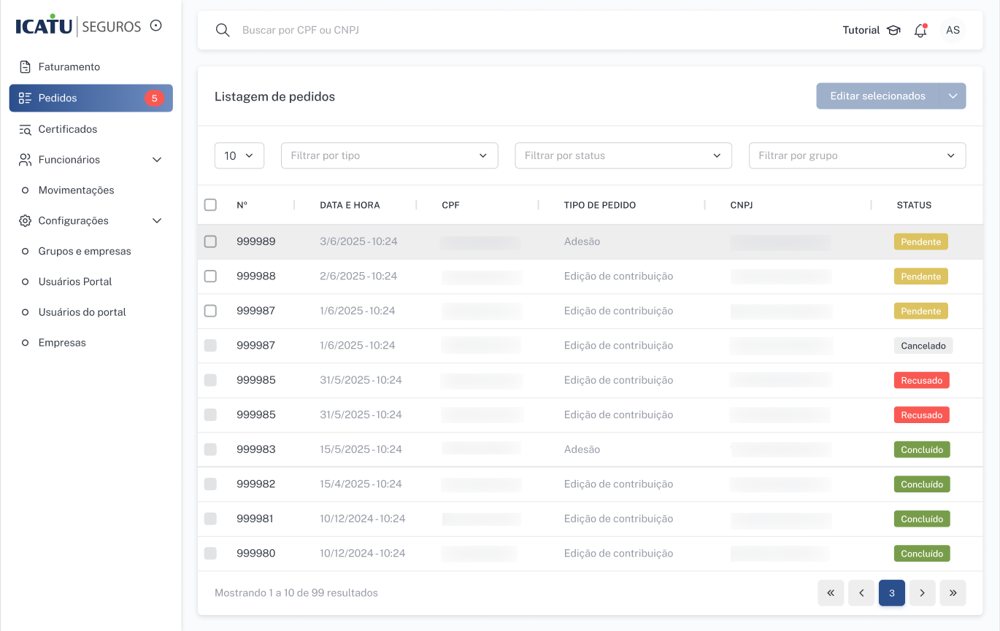
Lista de pedidos com filtros por tipo, status e grupo. Cada linha exibe o número do pedido, data, CPF, tipo, CNPJ e status atual. É possível selecionar múltiplos pedidos para edição em lote.
Detalhes do pedido
Ao clicar em um pedido na lista, o Portal exibe a tela de detalhes com todas as informações da solicitação:
- Dados do funcionário — nome, CPF, salário
- Dados da empresa — grupo, razão social, CNPJ, contrato
- Certificados do pedido — tabela com certificado, contrato, modalidade (PGBL Regressivo/Progressivo), conta (Básica participante/empresa), fundo de investimento e nova contribuição
- Comentários — canal de comunicação entre RH e Icatu sobre o pedido
- Histórico de atividades — registro cronológico de todas as ações realizadas no pedido (criação, conclusão, recusa, cancelamento)
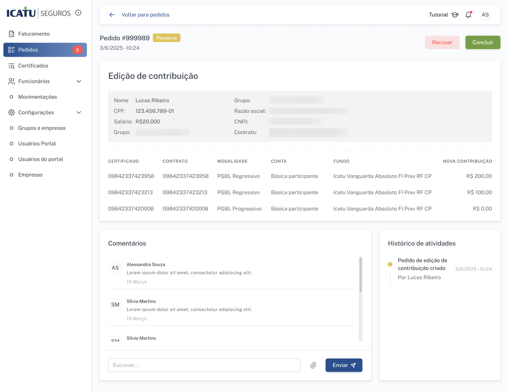
Detalhe de um pedido de Edição de contribuição (status Pendente). Exibe dados do funcionário, certificados com novos valores de contribuição, comentários e histórico. Os botões "Recusar" e "Concluir" ficam disponíveis no canto superior direito.
Concluir pedido
A ação de Concluir marca o pedido como processado no faturamento. Ao concluir, o pedido deixa de ser considerado nas próximas prévias.
Quando concluir o pedido
O RH deve concluir o pedido somente quando o boleto estiver sendo gerado ou já tiver sido gerado, garantindo que a fatura foi fechada e não haverá alteração nos pedidos aplicados. Concluir prematuramente pode causar problemas se houver reprocessamento da prévia.
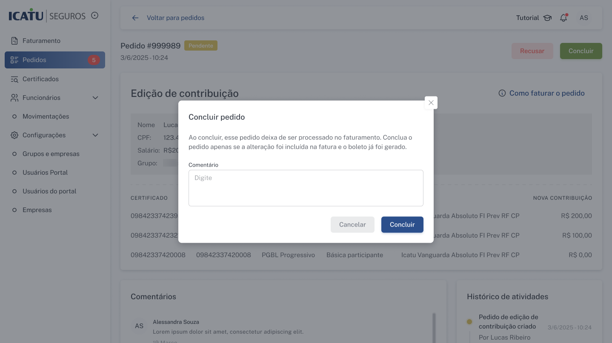
Modal de conclusão do pedido. O sistema alerta: "Ao concluir, esse pedido deixa de ser processado no faturamento. Conclua o pedido apenas se a alteração foi incluída na fatura e o boleto já foi gerado." O campo de comentário é opcional.
Risco ao concluir na etapa "Em processamento"
O sistema sempre busca os pedidos com status Pendente para gerar a prévia. Se o RH concluir os pedidos enquanto o faturamento ainda estiver na etapa "Em processamento" e o usuário Icatu utilizar a ação "Reprocessar críticas", o sistema irá gerar uma nova prévia sem os pedidos que foram marcados como concluídos, pois eles não terão mais status Pendente. Isso pode resultar em uma prévia com valores de contribuição diferentes do esperado.
Recusar pedido
A ação de Recusar descarta o pedido do faturamento. É utilizada quando o pedido não deve ser considerado naquele ciclo — por exemplo, quando há divergência nos dados ou a solicitação precisa ser revisada.
Ao recusar, o preenchimento do campo Motivo é obrigatório. Esse registro fica disponível no histórico de atividades do pedido.
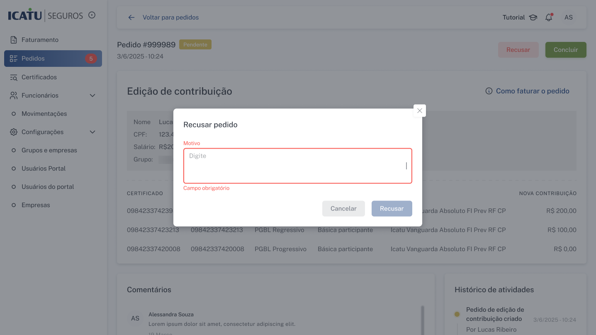
Modal de recusa do pedido. O campo "Motivo" é obrigatório e deve descrever por que o pedido não será aplicado ao faturamento.
Pedidos cancelados
Um pedido é cancelado automaticamente quando o funcionário realiza um novo pedido no app que substitui o anterior. O cancelamento garante que apenas o pedido mais recente — que representa a configuração atual do plano — seja considerado no faturamento.
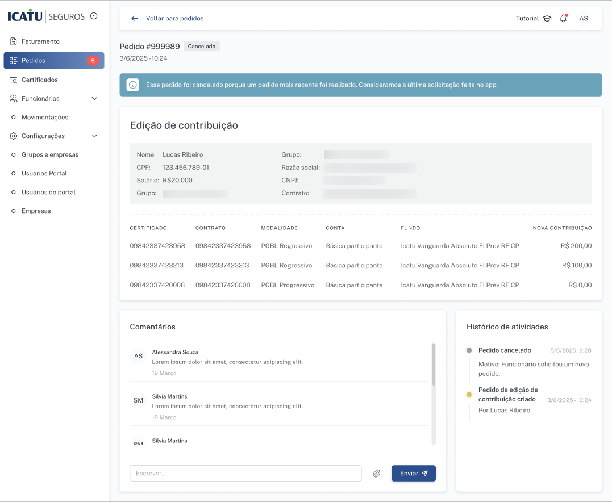
Pedido cancelado automaticamente. O banner informa: "Esse pedido foi cancelado porque um pedido mais recente foi realizado. Consideramos a última solicitação feita no app." O histórico de atividades registra o motivo do cancelamento.
Responsabilidades do RH
O RH tem papel fundamental na gestão dos pedidos de funcionários durante o faturamento. As principais responsabilidades são:
1
Validar os pedidos aplicados na prévia
Ao receber a prévia de faturamento, conferir a aba Movimentações para verificar quais pedidos foram aplicados (verde) e quais não foram (vermelho). Comparar a Prévia original com a Prévia final para confirmar se os valores estão corretos.
2
Investigar pedidos não aplicados
Para pedidos que aparecem em vermelho na aba Movimentações, investigar o motivo (certificado ausente na base da Icatu, divergência cadastral, etc.) e alinhar o tratamento com a equipe Icatu quando necessário.
3
Concluir pedidos após a emissão do boleto
Na lista de Pedidos, concluir todos os pedidos que foram aplicados na prévia somente após a emissão dos boletos. Não concluir prematuramente — aguardar a confirmação de que a fatura foi fechada.
4
Recusar pedidos quando necessário
Se um pedido não deve ser considerado no faturamento (dados incorretos, solicitação indevida), recusar informando o motivo. O pedido recusado não será aplicado em faturamentos futuros.
Permissões
| Ação | Perfis permitidos |
|---|
| Visualizar lista de pedidos |
admin-icatu filial-icatu analista-icatu admin-empresa analista-empresa parceiro-empresa |
| Concluir / Recusar pedidos |
admin-empresa analista-empresa parceiro-empresa |
Orientações para o time Icatu
O time Icatu não gerencia pedidos diretamente, mas desempenha um papel importante no suporte ao RH. Principais pontos de atenção:
Pedidos não aplicados na prévia
Se o RH reportar que um pedido não foi refletido na prévia, verifique:
- Aba Movimentações — o pedido aparece em vermelho? Se sim, o certificado provavelmente não existe na base da Icatu (prévia original).
- Status do pedido — está como Pendente? Se estiver como Cancelado, significa que o funcionário fez um pedido mais recente que substituiu o anterior.
- Certificado na base Icatu — o certificado pode ainda não ter sido processado nos arquivos diários. Alinhe com a equipe operacional para verificar.
Reprocessamento e pedidos concluídos
Antes de utilizar a ação "Reprocessar críticas" na etapa "Em processamento", verifique se o RH já concluiu algum pedido na lista de Pedidos. Se o RH tiver concluído pedidos que estavam aplicados na prévia, o reprocessamento irá gerar uma nova prévia sem esses pedidos, pois o sistema só busca pedidos com status Pendente.
Antes de reprocessar
Oriente o RH a não concluir pedidos enquanto o faturamento estiver nas etapas de Validação RH ou Em processamento. A conclusão deve ser feita somente quando os boletos estiverem sendo gerados ou já tiverem sido emitidos (etapa Aguardando Kit ou Kit disponível).
Dúvidas frequentes do RH
| Dúvida | Orientação |
|---|
| "O pedido do funcionário não aparece na prévia" |
Verificar a aba Movimentações: se o pedido aparece em vermelho, o certificado não foi encontrado na base. Se não aparece, o pedido pode ter sido cancelado por um pedido mais recente ou ainda não foi registrado no Portal. |
| "O funcionário fez um novo pedido após o faturamento ser aberto" |
O novo pedido cancela automaticamente o anterior. Se o faturamento já foi iniciado, o novo pedido será considerado somente no próximo ciclo — a prévia atual não é atualizada automaticamente. |
| "Concluí o pedido cedo demais, e agora?" |
Se o faturamento ainda estiver em processamento e houver reprocessamento, a prévia será gerada sem o pedido concluído. Nesse caso, pode ser necessário substituir a prévia manualmente incluindo os valores do pedido. |
| "Um pedido está como Recusado, mas o funcionário quer que seja aplicado" |
Um pedido recusado não pode ser revertido. O funcionário deve fazer um novo pedido no app, que será registrado como um novo pedido Pendente no Portal e aplicado no próximo faturamento. |
Resumo operacional
- Pedidos afetam apenas faturamentos regulares — faturamentos complementares não são impactados.
- A prévia é gerada com 3 abas: Prévia original (base Icatu), Prévia final (consolidada com pedidos) e Movimentações (mapa de pedidos).
- O RH deve validar a aba Movimentações, tratar pedidos não aplicados e concluir apenas após a emissão dos boletos.
- Se houver reprocessamento, apenas pedidos com status Pendente serão considerados na nova prévia.
Substituir prévia
Como enviar uma nova versão da prévia de faturamento e o que acontece quando ela é substituída.
O que é a prévia
A prévia de faturamento é o arquivo gerado pelo sistema com os dados de contribuição de cada certificado vinculado a um contrato. Cada contrato no ticket tem sua própria prévia, exibida como um card na aba "Prévias de faturamento".
Cada card de prévia mostra: número do contrato, tipo (PGBL/VGBL), valor parcial estimado, quantidade de linhas e número de críticas pendentes.
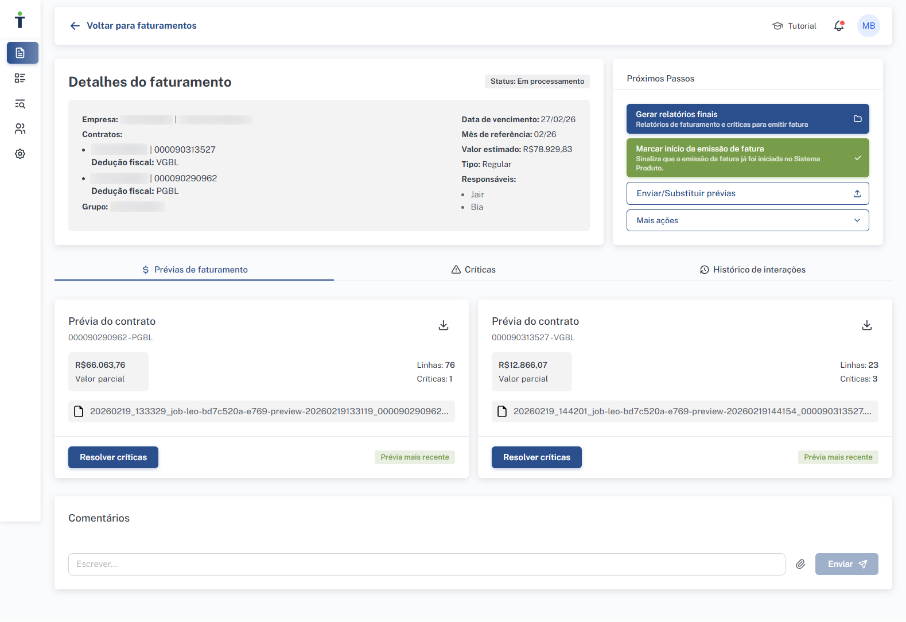
Tela de detalhes do faturamento na etapa "Em processamento" (visão Icatu), mostrando os cards de prévia por contrato com valores, linhas e críticas.
Quando substituir a prévia
- Quando o RH identificou erros nos dados e precisa enviar uma versão corrigida
- Quando há mudanças em contribuições de colaboradores
- Quando a Icatu devolveu o ticket para o RH e a prévia precisa ser atualizada
Como substituir
1
Acesse o ticket de faturamento
Na lista de faturamentos, clique no ticket desejado.
2
Clique em "Enviar/Substituir prévias"
No painel "Próximos Passos" (canto superior direito), clique no botão correspondente.
3
Faça upload do arquivo
Selecione o arquivo .xlsx da prévia corrigida. O nome do arquivo deve conter o número do contrato correspondente.
4
Verifique o processamento
O sistema valida o arquivo. Se houver erros, uma mensagem de "Arquivos Inválidos" será exibida (veja Erros de upload). Se o upload for bem-sucedido, a prévia é atualizada e as críticas são recalculadas.
Quem pode substituir em cada etapa
| Etapa | Quem pode substituir |
|---|
| Pré-validação | admin-icatu analista-icatu filial-icatu |
| Validação RH | admin-empresa analista-empresa parceiro-empresa |
| Em processamento | admin-icatu analista-icatu filial-icatu |
Prévia mais recente
Os cards de prévia exibem um botão "Prévia mais recente" que sempre mostra a última versão válida do arquivo. Versões anteriores ficam acessíveis pelo nome do arquivo original exibido no card.
Erros de upload
Todos os tipos de erros que podem ocorrer ao enviar ou substituir uma prévia, como aparecem para o usuário e como resolvê-los.
Ao substituir uma prévia de faturamento, o sistema executa uma série de validações no arquivo .xlsx enviado. Se alguma validação falhar, o upload é rejeitado e o usuário é notificado. Os erros podem aparecer de duas formas:
- Card de erro na tela — um banner vermelho "Arquivos Inválidos" é exibido diretamente na aba de Prévias de faturamento.
- Detalhes na planilha de retorno — quando há erros de conteúdo por linha, o sistema gera uma planilha para download com a descrição de cada problema encontrado.
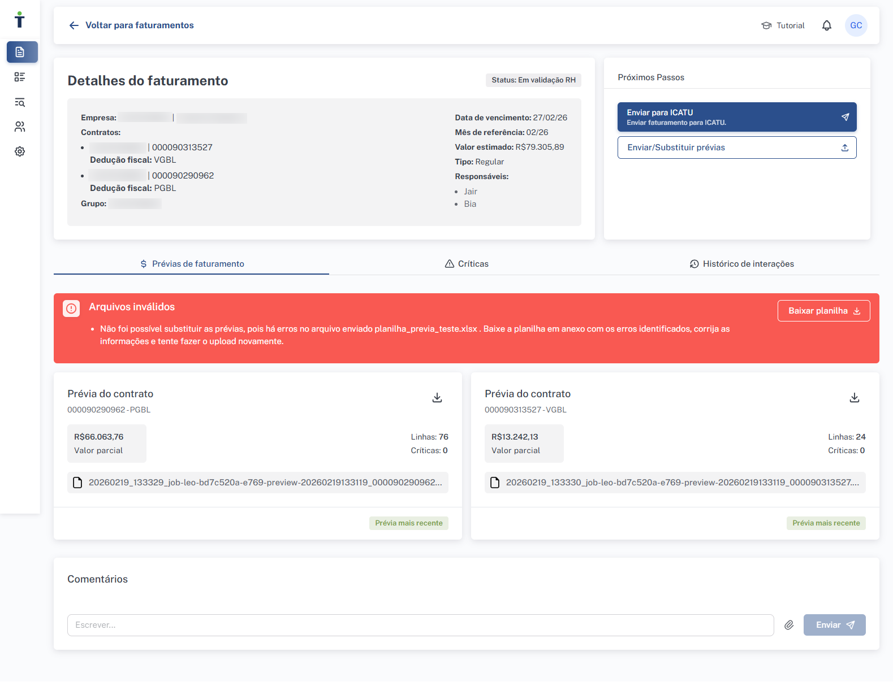
Exemplo de card "Arquivos Inválidos" exibido na tela. A mensagem descreve o problema e o botão "Baixar planilha" permite obter o detalhamento dos erros por linha.
Comportamento geral
Mesmo com erro no upload, o ticket não é bloqueado. A prévia anterior permanece ativa. O erro se refere apenas ao arquivo que foi rejeitado — é possível tentar novamente quantas vezes forem necessárias.
Erros de arquivo (exibidos na tela)
Esses erros impedem o processamento do arquivo inteiro e são exibidos como card de erro diretamente na tela do portal.
| Erro | Quando ocorre | Mensagem para o usuário | Como resolver |
|---|
| Contrato inválido |
O número do contrato no arquivo não corresponde a nenhum contrato do ticket |
"Não foi possível substituir as prévias porque o arquivo {nome} não corresponde a nenhum contrato deste faturamento. Confira o número informado no campo 'Contrato' e envie o arquivo novamente." |
Verifique se o contrato no cabeçalho do arquivo (linha 2) bate com um dos contratos do ticket. Confirme que está no ticket correto. |
| Arquivo protegido |
O arquivo está protegido por senha |
"O arquivo {nome} está protegido por senha. Remova a senha e envie novamente." |
Abra o arquivo no Excel, remova a proteção por senha (Arquivo > Informações > Proteger Pasta de Trabalho) e salve novamente. |
| Colunas inválidas |
O arquivo não possui as colunas obrigatórias ou estão nomeadas incorretamente |
"Não foi possível substituir as prévias porque o arquivo {nome} tem colunas inválidas ou ausentes. Corrija a planilha e envie novamente." |
Baixe a prévia mais recente como modelo e verifique se todas as colunas obrigatórias estão presentes e com os nomes corretos. |
| Erro genérico |
Erro inesperado durante o processamento da prévia |
"Não foi possível processar a prévia de faturamento. Por favor, tente novamente mais tarde." |
Aguarde alguns minutos e tente novamente. Se o erro persistir, entre em contato com o suporte técnico. |
| Erros no conteúdo |
O arquivo possui erros nos dados (detalhados na planilha de retorno) |
"Não foi possível substituir as prévias porque encontramos erros no arquivo {nome}. Baixe a planilha em anexo com os detalhes, corrija as informações e envie novamente." |
Clique em "Baixar planilha" no card de erro para obter o relatório detalhado. Veja as tabelas abaixo para cada tipo de erro possível. |
Erros de cabeçalho (estrutura do arquivo)
As 3 primeiras linhas do arquivo .xlsx devem seguir uma estrutura fixa. Erros nessas linhas aparecem na planilha de retorno para download.
| Linha | Campo | Formato esperado | Mensagem de erro |
|---|
| Linha 1, coluna A |
Label "Empresa" |
Texto exato: Empresa: |
A célula 1A deve conter exatamente o texto "Empresa". |
| Linha 1, coluna B |
Nome da empresa |
Nome em letras maiúsculas. Ex: NOME DA EMPRESA |
O nome da empresa está incorreto ou não foi informado. Informe em letras maiúsculas. |
| Linha 2, coluna A |
Label "Contrato" |
Texto exato: Contrato: |
A célula 2A deve conter exatamente o texto "Contrato". |
| Linha 2, coluna B |
Número do contrato |
8 dígitos numéricos. Ex: 00012345 |
O número do contrato é inválido ou não foi informado. |
| Linha 3, coluna A |
Label "Competência" |
Texto exato: Competência: |
A célula 3A deve conter exatamente o texto "Competência". |
| Linha 3, coluna B |
Competência |
Formato mm/yyyy (mês de 01 a 12). Ex: 01/2025 |
Insira a competência no formato mm/yyyy. |
Erros de conteúdo por coluna
A partir da linha de dados, o sistema valida o conteúdo de cada coluna individualmente. Erros aparecem na planilha de retorno, indicando a linha e o campo com problema.
| Campo | Formato esperado | Erro quando | Mensagem de erro |
|---|
cpf |
CPF válido, apenas dígitos |
CPF inválido ou vazio |
O número do CPF é inválido ou não foi informado. Insira um CPF válido contendo apenas dígitos. |
certificado |
12 dígitos numéricos |
Valor não numérico ou fora do padrão |
O número do certificado é inválido ou não foi informado. Informe um certificado válido contendo apenas dígitos. |
matricula |
Número inteiro ou vazio |
Valor não numérico e não vazio |
O código de matrícula é inválido. Informe um código válido contendo apenas dígitos. |
nome_participante |
Nome sem números ou caracteres especiais, ou vazio |
Contém números, underline ou caracteres especiais |
Insira um nome válido sem números ou caracteres especiais. |
beneficio |
Formato XXXXX - TIPO DE CONTA |
Formato inválido ou vazio |
O código do benefício é inválido. Insira um valor no formato 'XXXXX - TIPO DE CONTA'. |
valor_contribuicao |
Número decimal ou inteiro (obrigatório) |
Valor não numérico ou vazio |
O valor total de contribuição é inválido ou não foi informado. |
valor_funcionario |
Número decimal ou inteiro (obrigatório) |
Valor não numérico ou vazio |
O valor da contribuição do funcionário é inválido ou não foi informado. |
valor_empresa |
Número decimal ou inteiro (obrigatório) |
Valor não numérico ou vazio |
O valor da contribuição da empresa é inválido ou não foi informado. |
status_certificado |
ATIVO, SUSPENSO ou DESLIGADO (obrigatório) |
Valor não permitido ou vazio |
Status inválido ou não informado. Status aceitos: ATIVO, SUSPENSO ou DESLIGADO. |
data_admissao |
Formato DD/MM/YYYY ou vazio |
Formato de data inválido |
Data de admissão inválida. Insira no formato dd/mm/yyyy. Ex: 10/01/2024. |
data_desligamento |
Formato DD/MM/YYYY ou vazio |
Formato de data inválido |
Data de desligamento inválida. Insira no formato dd/mm/yyyy. Ex: 10/01/2025. |
codigo_fundo |
5 caracteres (letras maiúsculas e/ou números, obrigatório) |
Formato inválido ou vazio |
O código do fundo é inválido. Insira um código válido com 5 caracteres. |
tipo_conta |
Formato XX - TIPO DE CONTA (obrigatório) |
Formato inválido ou vazio |
O tipo de conta é inválido. Insira um valor no formato 'XX - TIPO DE CONTA'. |
Erros de validação de dados
Além da validação por campo, o sistema verifica a consistência geral dos dados.
| Validação | Erro quando | Mensagem de erro |
|---|
| Certificado duplicado |
O mesmo número de certificado aparece em duas ou mais linhas na planilha |
O código do certificado aparece em duas ou mais linhas. Preencha apenas uma linha para cada certificado. |
Fluxo de resolução
1
Identifique o tipo de erro
Se o card de erro na tela contém o botão "Baixar planilha", trata-se de erros no conteúdo — clique para obter o relatório detalhado. Caso contrário, a mensagem do card já descreve o problema (contrato inválido, arquivo protegido, etc.).
2
Analise e corrija
Na planilha de retorno, cada linha com erro contém a descrição do problema. Consulte as tabelas acima para entender o formato esperado de cada campo e corrija os dados na prévia original.
3
Reenvie o arquivo
Faça upload da prévia corrigida usando o botão "Enviar/Substituir prévias" nos Próximos Passos.
Normalização automática
O sistema aplica normalização automática em alguns campos: nomes de participantes, empresas, benefícios, fundos e tipos de conta são convertidos para letras maiúsculas automaticamente. Porém, se o valor original contiver caracteres inválidos (números em nomes, formatos incorretos), o erro será retornado antes da normalização.
Dica para suporte
Os erros mais comuns reportados por usuários RH são: (1) contrato inválido — geralmente o usuário está enviando a prévia no ticket errado; (2) formato de competência — o Excel pode converter a data para formato diferente de mm/yyyy; (3) certificado duplicado — linhas copiadas acidentalmente na planilha.
Resolução de críticas
O que são as críticas de faturamento, como visualizá-las, as opções de resolução e o processo completo por perfil.
O que são críticas
Críticas são inconsistências identificadas automaticamente pelo sistema ao processar as prévias de faturamento. Elas podem indicar divergências cadastrais, valores incompatíveis, certificados com problemas, entre outros. Enquanto houver críticas pendentes, o faturamento não pode avançar normalmente.
Cada crítica é identificada por um código (numérico ou com prefixo "CI") e uma descrição do problema encontrado. O apontamento e a geração de críticas são realizados exclusivamente pelo sistema — nenhum usuário (RH ou Icatu) gera críticas manualmente. Os usuários apenas resolvem as críticas apontadas, selecionando a ação de resolução adequada.
Aba de Críticas
No detalhe de um faturamento, a aba "Críticas" mostra um painel completo com:
- Cards de críticas pendentes — agrupados por tipo, com a contagem de ocorrências e link "ver críticas"
- Filtros — busca por CPF, nome, certificado; filtro por contrato e tipo de crítica
- Tabela detalhada — lista cada crítica individualmente com: contrato, descrição, CPF, nome, certificado, status, tipo de conta, fundo e ações disponíveis
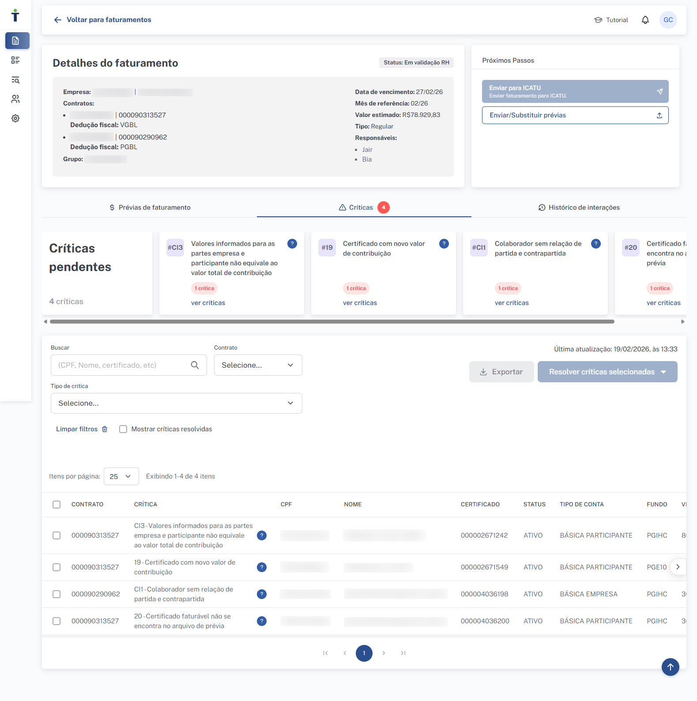
Aba "Críticas" com 4 críticas pendentes. Os cards superiores mostram os tipos de crítica; a tabela abaixo detalha cada ocorrência com dados do certificado.
Opções de resolução de crítica
Ao resolver uma crítica, o usuário deve selecionar uma das ações disponíveis. Nem todos os tipos de crítica permitem todas as opções — o sistema exibirá somente as ações permitidas para cada caso.
| Ação | Nome no Portal | Descrição |
|---|
descartar |
Descartar linha do faturamento |
Remove o certificado com a inconsistência deste faturamento. O certificado não será incluído na cobrança deste ciclo. Útil quando o dado está incorreto e não pode ser corrigido a tempo, ou quando o certificado não deve ser faturado. |
corrigir |
Aceitar valores para este faturamento |
Considera que o valor indicado na planilha de prévia está correto e deve ser faturado neste processo. A correção se aplica apenas ao faturamento atual — nos próximos ciclos, o sistema voltará a comparar com os dados sistêmicos. |
corrigir_definitivo |
Aceitar valores para este e os próximos faturamentos |
Considera que o valor indicado na planilha está correto e deve ser faturado desta maneira neste processo e nos processos futuros. A decisão é persistida no sistema, evitando que a mesma crítica seja gerada novamente em faturamentos subsequentes. |
Atenção
Algumas críticas possuem apenas a ação descartar, enquanto outras permitem combinações de descartar, corrigir e corrigir_definitivo. Há ainda críticas sem ação disponível no portal (código 18), que exigem tratamento manual fora do sistema. Consulte a tabela de mapa de críticas abaixo para saber as ações disponíveis para cada tipo.
Mapa completo de críticas
A tabela abaixo lista todas as críticas que o sistema pode gerar ao processar as prévias de faturamento. Cada crítica possui um código Icatu, uma descrição exibida no portal, uma orientação (tooltip) e as ações de resolução disponíveis.
Críticas com código numérico (origem Icatu)
| Código |
Exibição no Portal |
Orientação (Tooltip) |
Ações |
04 |
Certificado não está ativo para o CNPJ |
— |
descartar |
12 |
Não foi possível encontrar informações do conjunto de CPF e certificado informado |
Recomendamos corrigir o tipo de conta em um novo upload de prévia (ver coluna infos adicionais). É possível descartar esta(s) linha(s) de faturamento. |
descartar |
12 |
Certificado não está vinculado ao CPF informado |
Recomendamos corrigir o número do certificado em um novo upload de prévia (atualizar faturamento). É possível descartar esta(s) linha(s) de faturamento. |
descartar |
13 |
Certificado não está passível de cobrança |
Aceitar valores reativa o certificado para contribuição. |
descartar corrigir corrigir_definitivo |
13 |
Certificado não está ativo e faturável |
Recomendamos utilizar outro certificado para a contribuição ou retirar (descartar) do faturamento. |
descartar |
14 |
Certificado está suspenso para contribuição |
Aceitar valores confirma a reativação do certificado para contribuição. |
descartar corrigir corrigir_definitivo |
17 |
Certificado com contribuição zero sem indicação de desligamento ou suspensão |
Aceitar valores em definitivo confirma a suspensão do faturamento deste certificado. |
corrigir_definitivo |
18 |
Valor de contribuição informado para o certificado está diferente da participação estabelecida |
Sinalizar que é um certificado de risco e RH atualizar valor. |
nenhuma |
19 |
Certificado com novo valor de contribuição |
Aceitar valores confirma a nova contribuição para o(s) certificado(s). |
descartar corrigir corrigir_definitivo |
20 |
Certificado faturável não se encontra no arquivo de prévia |
É possível incluir estes certificados em um novo upload de prévia (atualizar faturamento) ou descartar esta crítica. |
descartar |
Críticas com prefixo CI (validações internas Onze)
| Código |
Exibição no Portal |
Orientação (Tooltip) |
Ações |
CI1 |
Colaborador sem relação de partida e contrapartida |
Recomendamos incluir o certificado complementar para viabilizar a regra de custeio ou descartar este colaborador do faturamento. |
descartar |
CI2 |
Certificado com valor de contribuição abaixo do mínimo |
Descartar retira o certificado do faturamento. É possível alterar o valor de contribuição em novo upload de prévia (substituir prévias). |
descartar |
CI3 |
Valores informados para as partes empresa e participante não equivale ao valor total de contribuição |
Recomendamos alinhar os valores dos campos "Vl. Total do Prêmio" e "Valor Empresa / Valor Funcionário" para garantir a consistência dos dados e possibilitar a inclusão no faturamento. |
descartar |
CI5 |
Funcionário está desligado sistemicamente e não pode ser faturado |
Descartar retira o certificado do faturamento. Caso o funcionário não esteja desligado, entrar em contato com a ICATU. |
descartar |
CI6 |
Somatório do valor total de contribuição neste tipo de conta está abaixo do mínimo |
Descartar retira o certificado do faturamento. É possível alterar o valor de contribuição em novo upload de prévia (substituir prévias). |
descartar |
Informações complementares
Algumas críticas exibem dados adicionais no portal para auxiliar na resolução, como o valor de contribuição previsto pela Icatu, o status sistêmico do certificado, a periodicidade de cobrança ou o tipo de conta associado. Essas informações aparecem na coluna "Infos adicionais" da tabela de críticas.
Resolvendo críticas VISÃO RH
Na etapa "Validação RH", é responsabilidade do RH resolver as críticas pendentes antes de enviar o faturamento para a Icatu. O faturamento só pode ser enviado quando todas as críticas estiverem resolvidas.
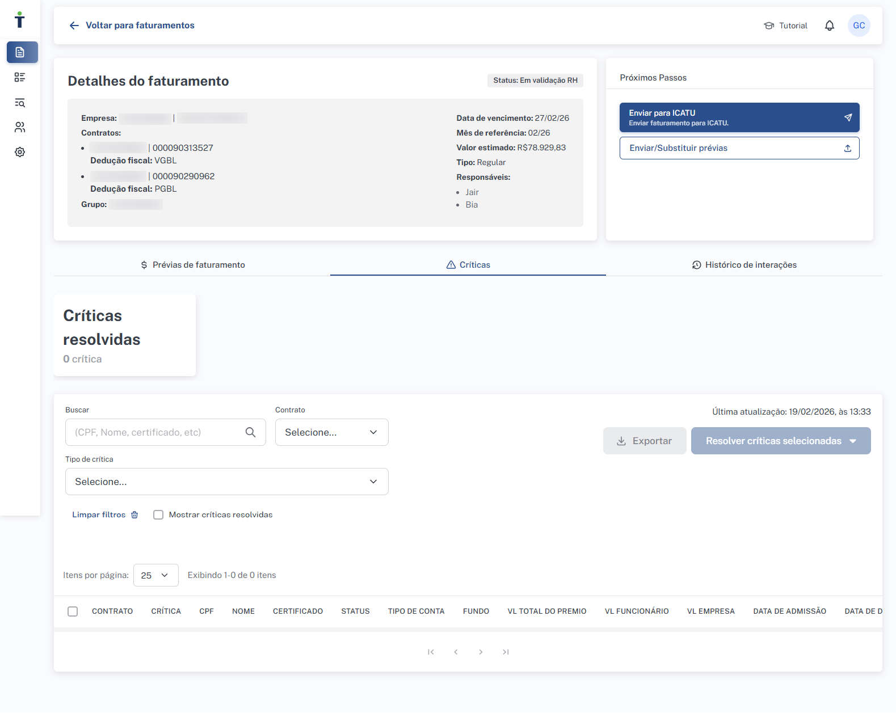
Visão do RH na etapa de validação. Neste exemplo, todas as críticas foram resolvidas (0 pendentes). O botão "Enviar para ICATU" está disponível nos Próximos Passos.
1
Analise cada crítica
Clique em "ver críticas" nos cards ou navegue pela tabela. Identifique a causa de cada inconsistência, consultando a descrição, o tooltip e as informações adicionais.
2
Selecione a ação de resolução
Selecione as críticas na tabela e clique em "Resolver críticas selecionadas". Escolha entre as ações disponíveis para o tipo de crítica: descartar, corrigir ou corrigir_definitivo. Se necessário, corrija os dados diretamente na planilha de prévia e faça um novo upload antes de resolver.
3
Exporte se necessário
Use o botão "Exportar" para baixar a lista de críticas em formato planilha, facilitando a análise offline e o alinhamento com a equipe.
4
Envie para a Icatu
Com todas as críticas resolvidas (0 pendentes), clique em "Enviar para ICATU" nos Próximos Passos para avançar o faturamento para a etapa de processamento.
Visão da Icatu VISÃO ICATU
Na etapa "Validação RH"
Enquanto o RH resolve as críticas, a Icatu tem as seguintes ações disponíveis:
- Reprocessar críticas — solicita que o sistema reavalie a prévia de faturamento e aponte novamente as críticas identificadas. Útil quando houve atualização cadastral ou correção externa que pode ter resolvido inconsistências.
- Puxar para a Icatu — muda o status do faturamento para "Em processamento", mesmo que o RH não tenha enviado. O RH perde a possibilidade de editar a partir desse momento.
Na etapa "Em processamento"
Após o RH enviar (ou a Icatu puxar o faturamento), a Icatu processa o faturamento:
Visão Icatu na etapa "Em processamento". Ações disponíveis: Gerar relatórios finais, Marcar início de emissão de fatura, Enviar/Substituir prévias e Mais ações.
- Reprocessar críticas — solicita que o sistema reavalie a prévia e aponte novas críticas, se houver. A Icatu pode resolver as críticas identificadas nesta etapa.
- Resolver críticas — em caráter excepcional, a Icatu pode resolver críticas pendentes diretamente na etapa de processamento, utilizando as mesmas opções de resolução (descartar, corrigir, corrigir_definitivo).
- Devolver para RH — retornar o faturamento para a etapa de validação RH, caso o RH precise resolver pendências.
- Exportar relatórios — gerar e baixar relatórios finais admin-icatu analista-icatu
- Enviar para fatura emitida — avançar para emissão admin-icatu analista-icatu
Permissões por etapa
| Ação | Validação RH | Em processamento |
|---|
| Resolver críticas |
admin-empresa analista-empresa parceiro-empresa |
admin-icatu analista-icatu filial-icatu |
| Reprocessar críticas |
admin-icatu analista-icatu filial-icatu |
admin-icatu analista-icatu filial-icatu |
Checkbox "Mostrar críticas resolvidas"
Por padrão, a aba de críticas exibe apenas as pendentes. Marque o checkbox "Mostrar críticas resolvidas" para ver o histórico completo de todas as críticas — útil para auditoria e acompanhamento.
Grupos e empresas
Estrutura organizacional do Portal: como grupos, empresas e contratos se relacionam e como navegar pelas configurações de cada cliente.
Hierarquia: Grupo → Empresa → Contrato
O Portal de Faturamento organiza os dados em três níveis hierárquicos. Essa estrutura permeia todas as funcionalidades — do faturamento às permissões de acesso.
| Nível | Descrição | Exemplo |
|---|
| Grupo |
Representa um cliente ou grupo empresarial. É o nível mais alto da hierarquia e agrupa uma ou mais empresas. |
Grupo Acme |
| Empresa |
Entidade jurídica identificada por CNPJ e razão social. Pertence a um grupo e pode ter um ou mais contratos de previdência. |
Acme Tecnologia Ltda (CNPJ: 12.345.678/0001-99) |
| Contrato |
Contrato de previdência vinculado a uma empresa. Possui número próprio (8 dígitos) e tipo de dedução fiscal (PGBL/VGBL). É a unidade base do faturamento — cada prévia é gerada por contrato. |
Contrato 00012345 (PGBL) |
Impacto nas demais funcionalidades
A hierarquia Grupo > Empresa > Contrato permeia todo o Portal. O faturamento é organizado por empresa (com prévias geradas por contrato), as permissões de acesso dos usuários são definidas com base nos contratos que podem visualizar, e as configurações de ciclo de faturamento, mínimos de contribuição e contrapartida são aplicadas no nível da empresa — afetando todos os contratos vinculados.
Navegando por grupos e empresas
No menu lateral do Portal, acesse Configurações > Grupos e empresas para visualizar a estrutura de clientes cadastrados.
1
Selecione um grupo
A tela inicial exibe a lista de todos os grupos disponíveis para o seu perfil. Use o campo "Pesquisar por grupo" para filtrar pelo nome.
2
Visualize as empresas do grupo
Ao clicar em um grupo, o sistema exibe a lista de empresas vinculadas, com razão social, CNPJ e ações disponíveis.
3
Acesse as configurações da empresa
Na coluna Ações, clique no ícone de visualização (olho) para consultar as configurações ou no ícone de edição (lápis) para modificá-las.
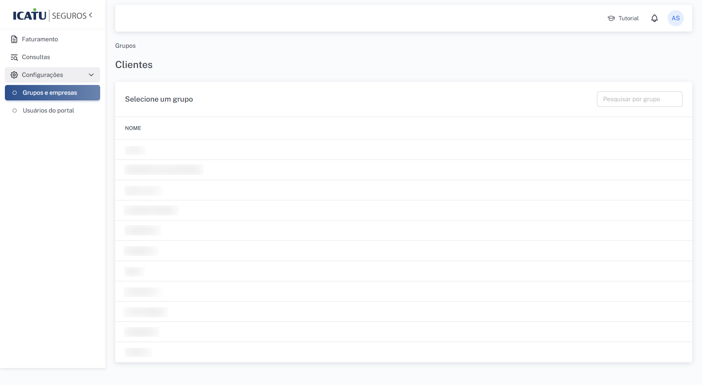
Grupos e empresas" />
Tela de Grupos e empresas — lista de grupos cadastrados com campo de busca. Cada grupo pode ser clicado para exibir suas empresas vinculadas.
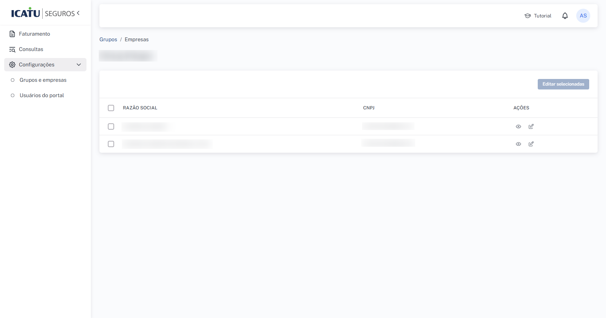
Lista de empresas de um grupo, exibindo razão social, CNPJ e ações disponíveis (visualizar/editar). O botão "Editar selecionadas" permite editar configurações de múltiplas empresas simultaneamente.
Visualizando configurações
Ao clicar no ícone de visualização (olho) de uma empresa, um painel lateral exibe um resumo das configurações atuais:
- Faturamento — ciclo de faturamento (dia de início, prazo para emissão, dia de vencimento), início automático do ciclo
- Mínimos de contribuição — se há valor mínimo configurado e qual a modalidade (por certificado ou por tipo de conta)
- Contrapartida — se há regra de partida e contrapartida ativa
- Responsáveis por faturamento — colaboradores Icatu designados (primário e secundário)
- Contatos — informações de contato da empresa para o "Fale Conosco"
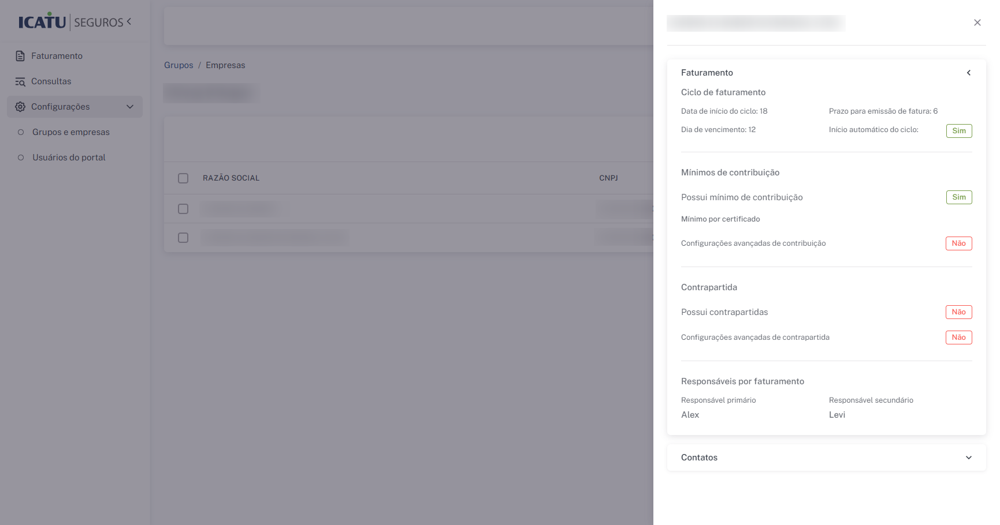
Painel de visualização rápida das configurações de uma empresa: ciclo de faturamento, mínimos, contrapartida, responsáveis e contatos.
Editando configurações
Ao clicar no ícone de edição (lápis), o sistema abre a página completa de Editar configurações. Nesta tela é possível alterar todas as parametrizações da empresa: ciclo de faturamento, mínimos de contribuição, contrapartida, responsáveis, destinatários de notificações e contatos do Fale Conosco.
Consulte as seções Ciclo de faturamento e Notificações para detalhes sobre cada campo.
Após realizar as alterações, clique em "Atualizar configurações" para salvar. Para desfazer, clique em "Descartar edições".
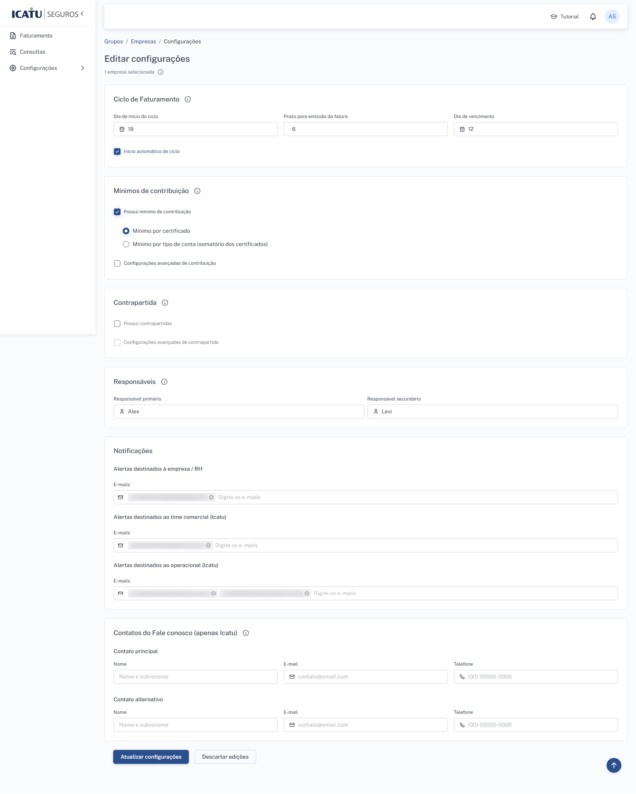
Página de edição de configurações com todos os campos: Ciclo de Faturamento, Mínimos de contribuição, Contrapartida, Responsáveis, Notificações e Contatos do Fale Conosco.
Edição em lote
É possível editar configurações de múltiplas empresas ao mesmo tempo. Na lista de empresas, selecione as desejadas usando os checkboxes e clique em "Editar selecionadas". O formulário de edição será aplicado a todas as empresas selecionadas simultaneamente.
Permissões
| Ação | Perfis permitidos |
|---|
| Visualizar grupos e empresas |
admin-icatu filial-icatu analista-icatu admin-empresa analista-empresa parceiro-empresa |
| Editar configurações |
admin-icatu filial-icatu analista-icatu |
Cadastro de novos grupos e empresas
Não é possível cadastrar novos Grupos ou Empresas diretamente pelo Portal. O sistema permite apenas a visualização e edição de configurações de clientes já existentes. Para solicitar a inclusão de um novo cliente, entre em contato pelo email atendimento@onze.com.br.
Visibilidade e escopo de acesso
Cada usuário enxerga apenas os grupos, empresas e contratos aos quais tem permissão de acesso:
- Usuários Icatu com acesso universal (
*) — visualizam todos os grupos e empresas do Portal.
- Usuários Icatu de filial — visualizam apenas os grupos e empresas da sua filial regional, conforme mapeamento do SSO.
- Usuários RH — visualizam apenas os grupos, empresas e contratos definidos no momento do convite (veja Convidar membro).
Dica para suporte
Quando um usuário RH relatar que não consegue ver determinada empresa ou contrato, verifique o escopo de acesso definido no convite. Para ampliar o acesso, é necessário editar o usuário em Configurações > Usuários do portal.
Ciclo de faturamento
Configurações que determinam como o faturamento é iniciado, processado e cobrado para cada empresa.
As configurações de ciclo de faturamento são definidas por empresa, na tela Configurações > Grupos e empresas > Editar configurações. Elas determinam prazos, regras de contribuição e responsáveis pelo acompanhamento do faturamento. Todos os contratos vinculados à empresa herdam essas configurações.
Visão geral dos parâmetros
| Parâmetro | Tipo | Descrição resumida | Onde impacta |
|---|
| Dia de início do ciclo | Dia do mês (1–31) | Dia em que o ciclo de faturamento começa | Abertura automática de tickets, referência de prazo |
| Prazo para emissão da fatura | Dias (1–31) | Número de dias para emissão da fatura | Cálculo do prazo de emissão |
| Dia de vencimento | Dia do mês (1–31) | Dia em que a fatura vence | Boleto e demonstrativo do kit de faturamento |
| Início automático do ciclo | Sim / Não | Se habilitado, o sistema cria o ticket regular automaticamente | Abertura mensal do faturamento |
| Mínimos de contribuição | Configuração | Valor mínimo por certificado ou por tipo de conta | Geração de críticas CI2 e CI6 |
| Contrapartida | Configuração | Regra de partida e contrapartida entre tipos de conta | Geração de crítica CI1 |
| Responsáveis | Usuários Icatu | Colaboradores Icatu responsáveis pelo faturamento | Gestão, filtros e acompanhamento |
Dia de início do ciclo
Define o dia do mês (1 a 31) em que o ciclo de faturamento da empresa começa. Esse valor é utilizado como referência para:
- A abertura automática de tickets regulares (quando habilitada)
- O cálculo dos prazos das etapas do fluxo de faturamento
Exemplo: se o dia de início é 18, o sistema considera que o faturamento daquele mês deve ser iniciado no dia 18.
Prazo para emissão da fatura
Define o número de dias disponíveis para a emissão da fatura após a conclusão do processamento. Esse prazo é utilizado para calcular a data limite em que a fatura precisa ser emitida no sistema da Icatu.
Exemplo: se o prazo é 6, a equipe Icatu tem 6 dias a partir do processamento para concluir a emissão.
Dia de vencimento
Define o dia do mês (1 a 31) em que a fatura vence. Esse valor é utilizado na geração do boleto e dos demonstrativos que compõem o kit de faturamento disponibilizado para a empresa.
Exemplo: se o dia de vencimento é 12, o boleto gerado terá vencimento no dia 12 do mês correspondente.
Relação entre os parâmetros
Os três parâmetros de prazo trabalham em conjunto. Considere o exemplo: início no dia 18, prazo de emissão de 6 dias e vencimento no dia 12. Isso significa que o faturamento começa no dia 18 do mês corrente, a fatura deve ser emitida dentro de 6 dias após o processamento, e o boleto terá vencimento no dia 12 (tipicamente do mês seguinte). Configure esses valores de forma coerente para garantir que a empresa tenha tempo hábil para o pagamento.
Início automático do ciclo
Quando habilitado, o sistema cria automaticamente um ticket de faturamento regular para a empresa no dia de início do ciclo configurado.
Como funciona a abertura automática
Todos os dias, o sistema executa um processo agendado que verifica quais empresas possuem início automático habilitado e cujo dia de início do ciclo corresponde ao dia atual. Para cada empresa elegível, um ticket de faturamento regular é criado automaticamente com todos os contratos vinculados. O ticket segue o fluxo normal: geração de prévias, pré-validação, validação RH, e assim por diante.
Quando não habilitar
Empresas que necessitam de controle manual sobre o início do faturamento devem manter o início automático desabilitado. Nesse caso, os tickets regulares precisam ser criados manualmente por um usuário Icatu (veja Abertura de ticket).
Mínimos de contribuição
Define se a empresa exige um valor mínimo de contribuição para que um certificado ou tipo de conta seja incluído no faturamento. Quando habilitado, há duas modalidades disponíveis:
| Modalidade | Como funciona | Crítica gerada |
|---|
| Mínimo por certificado |
Cada certificado individualmente deve atingir o valor mínimo de contribuição configurado para o seu tipo de conta. Se o valor informado na prévia for inferior ao mínimo, o sistema gera uma crítica. |
CI2 — Certificado com valor de contribuição abaixo do mínimo |
| Mínimo por tipo de conta (somatório) |
O somatório dos valores de contribuição de todos os certificados de um mesmo tipo de conta deve atingir o valor mínimo. Se o total acumulado for inferior, o sistema gera uma crítica. |
CI6 — Somatório do valor total de contribuição neste tipo de conta está abaixo do mínimo |
A opção "Configurações avançadas de contribuição" permite definir valores mínimos diferentes para cada tipo de conta (ex.: um mínimo para contas do participante e outro para contas da empresa). Quando desabilitada, o mesmo valor mínimo se aplica a todos os tipos.
Impacto no faturamento
Certificados ou tipos de conta que não atingem o mínimo configurado geram críticas obrigatórias que devem ser resolvidas antes que o faturamento possa avançar. A resolução típica é descartar a linha do faturamento ou corrigir o valor na prévia com um novo upload. Consulte Resolução de críticas para mais detalhes.
Contrapartida
A contrapartida define a regra de custeio entre tipos de conta vinculados. Quando habilitada, o sistema verifica se cada colaborador possui contribuições tanto na partida (ex.: conta do participante) quanto na contrapartida (ex.: conta da empresa), conforme o mapeamento configurado.
Se um colaborador possuir contribuição em um tipo de conta (partida) mas não no tipo vinculado (contrapartida), o sistema gera a crítica CI1 — "Colaborador sem relação de partida e contrapartida".
Exemplo prático
Se a regra de contrapartida vincular o tipo de conta "Participante Básico" ao tipo "Empresa Básico", e um colaborador enviar contribuição apenas na conta de participante sem a correspondente contribuição da empresa, o sistema apontará a crítica CI1 para esse colaborador.
Configurações avançadas de contrapartida
A opção "Configurações avançadas de contrapartida" permite definir os mapeamentos específicos entre tipos de conta partida e contrapartida. Essa parametrização varia conforme o plano de previdência da empresa e deve refletir as regras contratuais de custeio.
Responsáveis
Define os colaboradores Icatu responsáveis pelo acompanhamento do faturamento da empresa:
- Responsável primário — principal ponto de contato e responsável pela gestão do faturamento da empresa
- Responsável secundário — apoio e backup do responsável primário
Os responsáveis são exibidos na coluna "Responsáveis" da lista de faturamentos e podem ser utilizados como filtro para facilitar a gestão no dia a dia.
Obrigatoriedade
É obrigatório definir pelo menos um responsável primário para cada empresa. O responsável secundário é opcional, mas recomendado para garantir continuidade no acompanhamento.
Contatos do Fale Conosco
Na seção "Contatos do Fale conosco (apenas Icatu)" do formulário de edição, é possível definir informações de contato da empresa que são exibidas para os usuários no Portal:
- Contato principal — nome, email e telefone do contato principal da empresa
- Contato alternativo — dados de um contato secundário para redundância
Esses contatos são utilizados na funcionalidade "Fale Conosco" e são visíveis apenas para usuários Icatu, facilitando o contato com a empresa quando necessário.
Quem pode editar
As configurações de ciclo de faturamento são editáveis apenas por usuários Icatu:
| Ação | Perfis permitidos |
|---|
| Editar configurações de faturamento |
admin-icatu filial-icatu analista-icatu |
Usuários RH não podem alterar as configurações de faturamento. Caso o RH precise solicitar alteração em algum parâmetro (ex.: dia de vencimento, mínimos de contribuição), a solicitação deve ser feita ao responsável Icatu da empresa.
Notificações
Mapa completo dos alertas automáticos do Portal, seus gatilhos, destinatários e como configurar os emails de recebimento.
O Portal de Faturamento envia notificações automáticas por email e pelo painel de notificações do portal (ícone de sino no cabeçalho). Os alertas são disparados em momentos-chave do fluxo de faturamento para manter todos os envolvidos informados sobre o andamento de cada etapa.
Mapa de alertas
A tabela abaixo lista todos os alertas automáticos configurados no Portal, o evento que dispara cada um, os perfis que recebem e os canais de entrega.
| Alerta |
Gatilho |
Destinatários |
Canais |
Resumo do conteúdo |
| Ticket aberto |
Um novo ticket de faturamento é criado (manual ou automático) |
Icatu operacional Icatu comercial |
Portal + Email |
Informa que um novo faturamento foi aberto para o grupo/empresa, com a competência e contratos envolvidos. |
| Validação RH |
As prévias foram geradas e o faturamento está disponível para validação pela empresa |
Empresa / RH |
Portal + Email |
Notifica o RH de que há um faturamento aguardando análise e envio das prévias validadas. |
| Em processamento |
O RH enviou o faturamento para a Icatu (ou a Icatu puxou o ticket) |
Icatu operacional |
Portal |
Informa que o faturamento está disponível para análise e processamento pela equipe Icatu. |
| Kit disponível |
O kit de faturamento (boletos e demonstrativos) está pronto para download |
Icatu operacional Empresa / RH Icatu comercial |
Portal + Email |
Notifica que o kit está disponível. A empresa deve baixar os documentos para providenciar o pagamento. |
| Novo comentário |
Um novo comentário é adicionado ao ticket de faturamento |
Icatu operacional Empresa / RH Icatu comercial |
Portal + Email |
Notifica os envolvidos de que há um novo comentário no ticket, identificando o autor da mensagem. |
Alerta "Em processamento" — somente no portal
O alerta de "Em processamento" é enviado apenas como notificação no portal, sem envio de email. Isso porque o evento é de interesse operacional interno da Icatu, que já acompanha o fluxo diretamente pela interface.
Configuração de destinatários por email
Os emails que receberão as notificações são configurados por empresa, na tela Configurações > Grupos e empresas > Editar configurações, na seção "Notificações". Existem três grupos de destinatários:
| Grupo de destinatários | Descrição | Alertas que recebe por email |
|---|
| Alertas destinados à empresa / RH |
Emails dos contatos da empresa (RH) que devem receber notificações sobre o faturamento. |
Validação RH, Kit disponível, Novo comentário |
| Alertas destinados ao time comercial (Icatu) |
Emails dos responsáveis comerciais da Icatu que acompanham o cliente. |
Ticket aberto, Kit disponível, Novo comentário |
| Alertas destinados ao operacional (Icatu) |
Emails da equipe operacional da Icatu responsável pelo processamento do faturamento. |
Ticket aberto, Kit disponível, Novo comentário |
Emails independentes do login
Os emails configurados na seção de Notificações não precisam ser de usuários cadastrados no Portal. Qualquer endereço de email pode ser adicionado como destinatário — isso permite incluir gestores, equipes de apoio ou caixas compartilhadas que não necessariamente acessam o Portal.
Notificações no portal
Além dos emails, o Portal exibe notificações na interface, acessíveis pelo ícone de sino no canto superior direito do cabeçalho. As notificações no portal são entregues individualmente para cada usuário com base no seu perfil e nos contratos aos quais tem acesso.
- O sino exibe um indicador com a quantidade de notificações não lidas
- Ao clicar, o painel lista as notificações recentes com título, resumo e data
- É possível marcar notificações como lidas individualmente ou todas de uma vez
Conteúdo dos emails
Os emails de notificação seguem um template padronizado e incluem as seguintes informações dinâmicas:
- Competência — mês/ano de referência do faturamento
- Grupo e CNPJ — identificação do grupo e empresa
- Contratos — lista dos contratos envolvidos no faturamento
- Autor — nome do autor (em alertas de novo comentário)
- Link de acesso — botão que direciona o destinatário diretamente para o ticket no Portal
Quem pode configurar
| Ação | Perfis permitidos |
|---|
| Configurar emails de destinatários |
admin-icatu filial-icatu analista-icatu |
Usuários RH não podem alterar os destinatários de notificação. Para solicitar alteração, o RH deve entrar em contato com o responsável Icatu da empresa.
Boas práticas
- Mantenha os emails atualizados — destinatários desatualizados podem causar atrasos na operação por falta de visibilidade.
- Inclua pelo menos dois emails no grupo "empresa / RH" para garantir redundância.
- Para o time comercial da Icatu, inclua o email do executivo de contas responsável pelo cliente.
- Use caixas compartilhadas (ex.:
faturamento@empresa.com.br) quando possível, para evitar dependência de um único colaborador.
Dica para suporte
Se um usuário RH reportar que não está recebendo emails de notificação, verifique: (1) se o email está cadastrado nos destinatários da empresa em Configurações > Grupos e empresas > Editar configurações > Notificações; (2) se o email não está caindo na caixa de spam; (3) se o alerta esperado realmente envia email para o grupo "empresa / RH" (o alerta "Em processamento", por exemplo, é enviado apenas no portal).